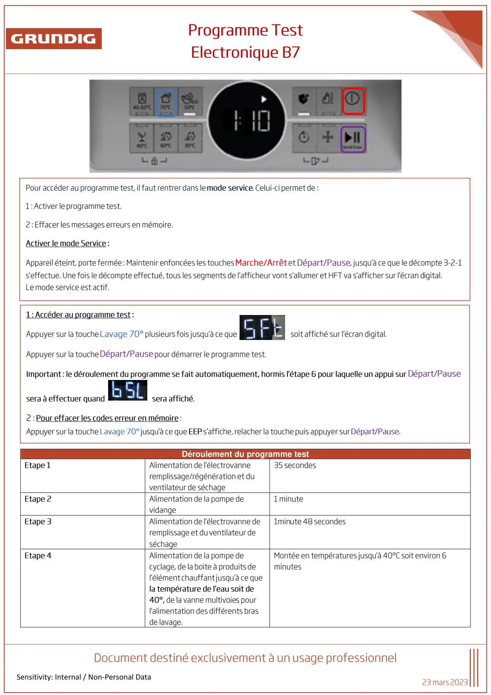
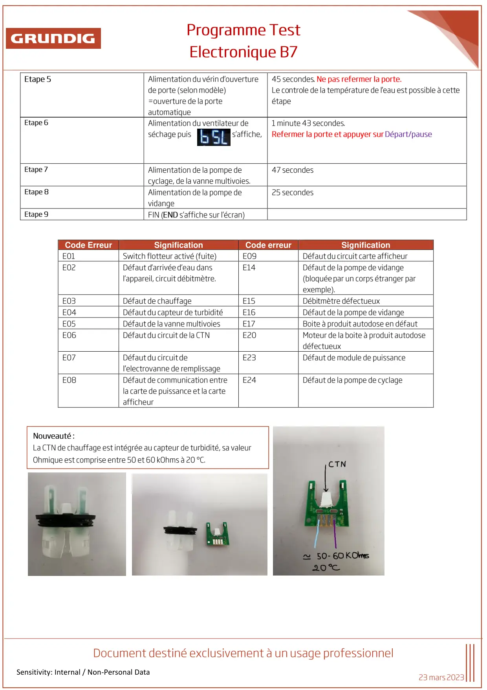

Prog Test lave vaisselle Atlantis Electronique B7

Sensitivity: Internal / Non-Personal DataDéroulement du programme test
1 / 2
Sensitivity: Internal / Non-Personal DataCode ErreurSignificationCode erreurSignification
2 / 2


Gros électroménager
Ressources techniques SAV — Beko · Grundig · Whirlpool · Hotpoint · Indesit.

